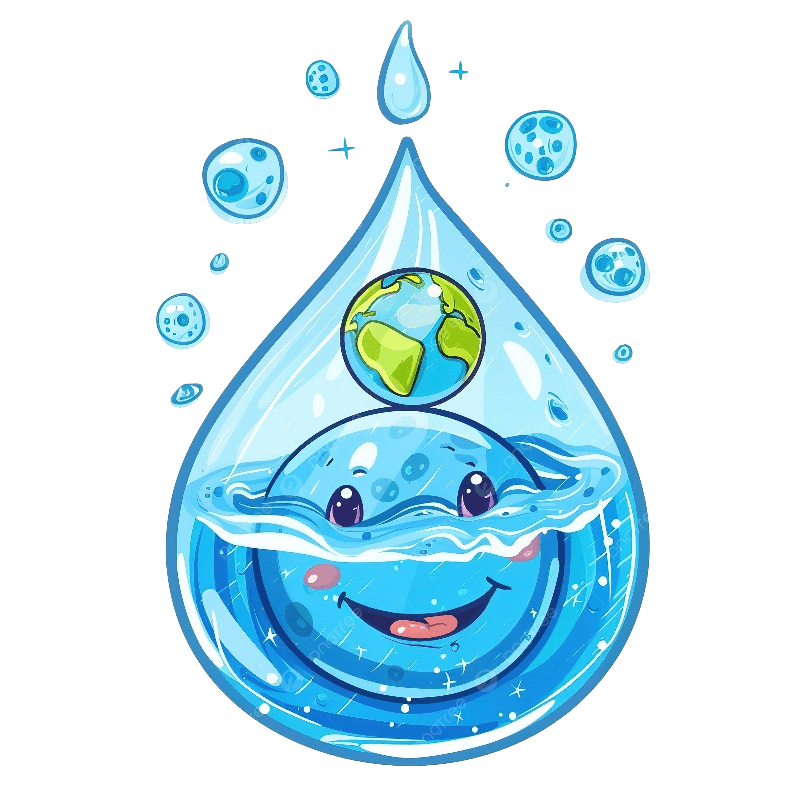

Había una vez una pequeña gota de agua llamada Gotita
vivía feliz en un río de agua H2O cristalino que corría
entre montañas verdes y prados llenos de flores. Cada mañana,
el sol la saludaba con sus rayos dorados,
y los peces jugaban a su alrededor
-
¡Hola Gotita! - decía el pez, Nemo-¿Listo para otro día de aventuras?
-Claro- respondía Gotita, rebotando suavemente sobre las olas-, Me
encanta viajar con el río.
Pero un día, algo mágico pasó. El sol brilló con más fuerza que nunca, y
Gotita sintió un cosquilleo en todo su cuerpo.
- ¡Ay!- dijo-, !Me siento más ligera!
De pronto, empezó a elevarse lentamente, como si tuviera alas invisibles.
¡Estaba evaporándose!
Y así, Gotita subió y subió, hasta convertirse en una pequeña nube blanca
en el cielo
Para saber más sobre el ciclo del agua visita este este enlace
 Allá arriba, Gotita no estaba sola. Conoció a muchísimas otras gotas de agua
que también habían subido desde ríos, lagos y mares.
Se tomaron todas de las manos y juntas formaron una nube grande y esponjosa, como de algodón.
¡Era muy divetido flotar juntas por el cielo, empujadas por el viento! "¡Que blandita es nuestra
casa nueva!", decían riendo.
A esto, una gota más sabia le explicó que se llamaba condensación. La nube se hizo más y más grande a medida que
llegaban más y más amigas gotas.
Una por una, comenzaron a caer de nuevo hacia la tierra en forma de lluvia. ¡Y a esto se le
llama precipitación!
Después de mojar el bosque, Gotita comenzó a fluir por un pequeño arroyo.
¡Bienvenida de vuelta, Gotita!-, dijo el río con un murmullo.
Y así, Gotita continuó su viaje en el gran ciclo del agua, lista para volver a subir, caer y ayudar a la tierra
a vivir.